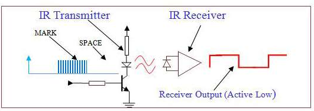
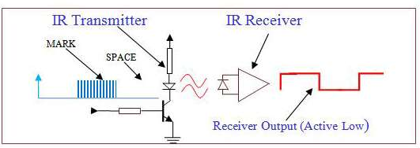

[RTL8722CSM] [RTL8722DM] UART - Retrieve GPS Position¶
Preparation
Ameba x 1
- `Adafruit Ultimate GPS
Breakout <https://www.adafruit.com/products/746>`__ x 1 (Refer to official document)
Example
In this example, we use Adafruit Ultimate GPS Breakout. Its data format
is pure text, so we can connect it to USB to TTL Adapter and observe the
output.
 It follows the NMEA sentence format (refer
to http://aprs.gids.nl/nmea/)The GPS signal is weak in indoor
environment. The status that the GPS signal is not received is called
“not fix”. Bring the GPS module outdoors, when the GPS signal is “fix”,
you would get message similar to the figure below.In this example
we are only interested in the “$GPRMC (Global Positioning Recommended
Minimum
Coordinates)”: $GPRMC,032122.000,A,2446.8181,N,12059.7251,E,0.39,78.89,270116,,,A*53 Each
field is separated by a comma.
It follows the NMEA sentence format (refer
to http://aprs.gids.nl/nmea/)The GPS signal is weak in indoor
environment. The status that the GPS signal is not received is called
“not fix”. Bring the GPS module outdoors, when the GPS signal is “fix”,
you would get message similar to the figure below.In this example
we are only interested in the “$GPRMC (Global Positioning Recommended
Minimum
Coordinates)”: $GPRMC,032122.000,A,2446.8181,N,12059.7251,E,0.39,78.89,270116,,,A*53 Each
field is separated by a comma.
{kind=link}
- First field is the GMT time (Greenwich Mean Time), that is 032122.000
in this example. The time format is HH:MM:SS.SSS, i.e., 03:21:22.000. Note that the time zone and the daylight-saving time adjustment should be handled on your own.
Second field represents the status code
V: Void (Invalid)
A: Active, meaning the GPS signal is fix.
The third to sixth fields represent the geolocation
In this example, 2446.8181,N represents 24 degrees 46.8181 minutes north
latitude, and 12059.7251,E represents 120 degrees 59.7251 minutes east
longitude. We can search **+24 46.8181’, +120 59.7251’ **in Google map
to check whether the position is correct.
- The seventh field is relative speed(knot). 1 knot = 1.852km/hr, in
this example the relative speed is 0.39 knot.
- The eighth field is the moving angle, which is calculated by its
moving orbit.
- The ninth field is the date with format ddMMyy. In this example,
“270116” stands for day 27, January, year 2016.
The last field is checksum. In the example we have *53 as checksum.
RTL8722 wiring diagram: Open the example in “Files” -> “Examples” ->
“AmebaSoftwareSerial” -> “Adafruit_GPS_parsing”. Compile and upload to
Ameba, then press the reset button. The result will be output to Serial
Monitor:
Open the example in “Files” -> “Examples” ->
“AmebaSoftwareSerial” -> “Adafruit_GPS_parsing”. Compile and upload to
Ameba, then press the reset button. The result will be output to Serial
Monitor: